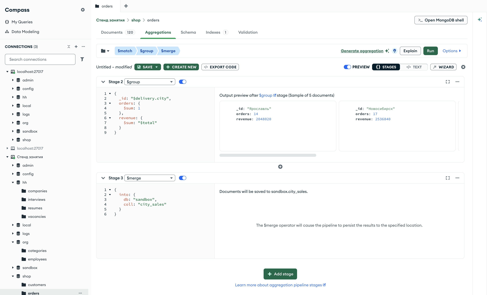

Справочник по MongoDB · модуль 6 · связи между коллекциями
6.5
$merge и $out:
результат конвейера в коллекцию
До этой главы результат конвейера уходил в программу и пропадал после её завершения. $merge и $out записывают его в коллекцию, которую потом читают обычным find. В главе разобрана витрина продаж по городам, повторный запуск с разными правилами для совпавших документов, накопление итогов, связь по своему полю и уникальный индекс, запрет повторов и полная замена коллекции стадией $out.
- Категория
- Агрегация
- Уровень
- Средний
- Связанные темы
- $group (глава 4.4), $lookup (глава 6.1), уникальные индексы (глава 3.2), $set (глава 4.3), find и сортировка (главы 1.4 и 1.6)
- Зачем это знать
- Сохранять готовые отчёты в коллекцию-витрину, обновлять её новыми данными и не пересчитывать отчёт заново при каждом чтении
Как запускать примеры этой главы
docker compose run --rm reset или скрипт из главы 1.0, §6.mongodb-glava-6.5-python.zip, 63 КБmongodb-glava-6.5-ruby.zip, 62 КБmongodb-glava-6.5-go.zip, 68 КБmongodb-glava-6.5-cpp.zip, 66 КБ — все примеры главы готовыми программами, базы и стенд в Docker. В README.md — запуск в Docker, если Compass нет или он не подключается, и на установленном сервере с Compass, а также что должна напечатать каждая программа.lessons/ch6_5.py — пример вставляется в конец файлаlessons/ch6_5.rb — пример вставляется в конец файлаlessons/ch6_5.go — пример внутрь скобок в конце main, функции и типы — выше mainlessons/ch6_5.cpp — пример внутрь скобок в конце main, функции — выше maincd lessons, затем python ch6_5.pycd lessons, затем python3 ch6_5.py · в Docker: docker compose run --rm python lessons/ch6_5.pycd lessons, затем ruby ch6_5.rb · в Docker: docker compose run --rm ruby lessons/ch6_5.rbcd lessons, затем go run ch6_5.go · в Docker: docker compose run --rm go lessons/ch6_5.gocd lessons, затем g++ -std=c++17 ch6_5.cpp -o prog $(pkg-config --cflags --libs libmongocxx1) && ./prog · в Docker: docker compose run --rm cpp lessons/ch6_5.cpp§1Витрина: стадия $merge
Руководитель каждое утро смотрит сводку продаж по городам. Если пересчитывать её по всем заказам при каждом просмотре, ждать приходится долго. Поэтому сводку считают один раз и вывешивают на доску, а при новых продажах дописывают.
Коллекция, где хранится заранее посчитанный отчёт, называется витриной. Её документы читают обычным find, без конвейера. Стадия $merge записывает результат конвейера в коллекцию: каждый документ потока добавляется в неё или сливается с документом, у которого тот же _id. Если коллекции нет, $merge её создаёт. Цель задаётся параметром into: {"into": {"db": "sandbox", "coll": "city_sales"}}. Без имени базы коллекция создаётся в той же базе, где выполняется конвейер, — для заказов это shop, поэтому в книге база указывается всегда.
Пример очищает песочницу от прошлого запуска, считает доставленные заказы и выручку по городам, записывает их в sandbox.city_sales и читает витрину find по возрастанию _id.
city_sales = sandbox["city_sales"] city_sales.drop() showcase = [ {"$match": {"status": "доставлен"}}, {"$group": { "_id": "$delivery.city", "orders": {"$sum": 1}, "revenue": {"$sum": "$total"}, }}, {"$merge": {"into": {"db": "sandbox", "coll": "city_sales"}}}, ] orders.aggregate(showcase) for doc in city_sales.find().sort("_id", 1): print(doc)
auto city_sales = sandbox["city_sales"]; city_sales.drop(); mongocxx::pipeline showcase; showcase.match(make_document(kvp("status", "доставлен"))); showcase.group(make_document( kvp("_id", "$delivery.city"), kvp("orders", make_document(kvp("$sum", 1))), kvp("revenue", make_document(kvp("$sum", "$total"))))); showcase.append_stage(make_document(kvp("$merge", make_document( kvp("into", make_document(kvp("db", "sandbox"), kvp("coll", "city_sales"))))))); for (auto&& doc : orders.aggregate(showcase)) {} mongocxx::options::find opts; opts.sort(make_document(kvp("_id", 1))); for (auto&& doc : city_sales.find({}, opts)) { std::cout << bsoncxx::to_json(doc, bsoncxx::ExtendedJsonMode::k_relaxed) << std::endl; }
citySales := sandbox.Collection("city_sales") citySales.Drop(ctx) showcase := mongo.Pipeline{ {{Key: "$match", Value: bson.D{{Key: "status", Value: "доставлен"}}}}, {{Key: "$group", Value: bson.D{ {Key: "_id", Value: "$delivery.city"}, {Key: "orders", Value: bson.D{{Key: "$sum", Value: 1}}}, {Key: "revenue", Value: bson.D{{Key: "$sum", Value: "$total"}}}}}}, {{Key: "$merge", Value: bson.D{ {Key: "into", Value: bson.D{ {Key: "db", Value: "sandbox"}, {Key: "coll", Value: "city_sales"}}}}}}, } orders.Aggregate(ctx, showcase) cursor, _ := citySales.Find(ctx, bson.D{}, options.Find().SetSort(bson.D{{Key: "_id", Value: 1}})) for cursor.Next(ctx) { var doc bson.D cursor.Decode(&doc) out, _ := bson.MarshalExtJSON(doc, false, false) fmt.Println(string(out)) }
city_sales = sandbox[:city_sales]
city_sales.drop
showcase = [
{ "$match" => { "status" => "доставлен" } },
{ "$group" => {
"_id" => "$delivery.city",
"orders" => { "$sum" => 1 },
"revenue" => { "$sum" => "$total" },
} },
{ "$merge" => { "into" => { "db" => "sandbox", "coll" => "city_sales" } } },
]
orders.aggregate(showcase).to_a
city_sales.find.sort(_id: 1).each { |doc| puts doc.inspect }
{'_id': 'Екатеринбург', 'orders': 16, 'revenue': 1390470}
{'_id': 'Москва', 'orders': 12, 'revenue': 1387760}
{'_id': 'Новосибирск', 'orders': 17, 'revenue': 2536840}
{'_id': 'Санкт-Петербург', 'orders': 10, 'revenue': 1169540}
{'_id': 'Ярославль', 'orders': 14, 'revenue': 2048020}
{ "_id" : "Екатеринбург", "orders" : 16, "revenue" : 1390470 }
{ "_id" : "Москва", "orders" : 12, "revenue" : 1387760 }
{ "_id" : "Новосибирск", "orders" : 17, "revenue" : 2536840 }
{ "_id" : "Санкт-Петербург", "orders" : 10, "revenue" : 1169540 }
{ "_id" : "Ярославль", "orders" : 14, "revenue" : 2048020 }
{"_id":"Екатеринбург","orders":16,"revenue":1390470}
{"_id":"Москва","orders":12,"revenue":1387760}
{"_id":"Новосибирск","orders":17,"revenue":2536840}
{"_id":"Санкт-Петербург","orders":10,"revenue":1169540}
{"_id":"Ярославль","orders":14,"revenue":2048020}
{"_id"=>"Екатеринбург", "orders"=>16, "revenue"=>1390470}
{"_id"=>"Москва", "orders"=>12, "revenue"=>1387760}
{"_id"=>"Новосибирск", "orders"=>17, "revenue"=>2536840}
{"_id"=>"Санкт-Петербург", "orders"=>10, "revenue"=>1169540}
{"_id"=>"Ярославль", "orders"=>14, "revenue"=>2048020}
В витрине пять документов — по городу на документ. _id — название города: его задала группировка, и $merge записал документы как есть. Сам конвейер ничего не вернул программе: все документы ушли в коллекцию, поэтому витрину читает отдельный find.
В Ruby aggregate только описывает запрос; сервер выполняет его при чтении результата. Поэтому конвейер с $merge завершается вызовом .to_a — без него запись не произойдёт.
В C++ запрос выполняется при чтении курсора, который вернул aggregate. Поэтому конвейер с $merge запускается пустым циклом по курсору — без него запись не произойдёт.
| Шаг | Где | Документов |
|---|---|---|
| $match · доставлен | shop.orders | 120 → 69 |
| $group · город | поток конвейера | 69 → 5 |
| $merge | sandbox.city_sales | 5 записано, программе — 0 |
| find | sandbox.city_sales | 5 прочитано |
Конвейер читает одну базу, а пишет в другую. Заказы магазина не меняются.
§2Повторный запуск: whenMatched
Когда $merge записывает документ, а в коллекции уже есть документ с тем же _id, действие задаёт параметр whenMatched. По умолчанию — "merge": поля нового документа дописываются в старый, совпадающие поля перезаписываются, остальные остаются. "replace" заменяет старый документ новым целиком. Параметр whenNotMatched задаёт действие для документа без пары: "insert" (по умолчанию) добавляет его, "discard" отбрасывает.
Пример строит витрину из §1, затем дважды записывает в неё число заказов в пути по городам: сначала с merge, потом с replace. В обоих запусках whenNotMatched — "discard": новых городов в витрину не добавлять.
city_sales = sandbox["city_sales"] city_sales.drop() showcase = [ {"$match": {"status": "доставлен"}}, {"$group": { "_id": "$delivery.city", "orders": {"$sum": 1}, "revenue": {"$sum": "$total"}, }}, {"$merge": {"into": {"db": "sandbox", "coll": "city_sales"}}}, ] add_transit = [ {"$match": {"status": "в пути"}}, {"$group": {"_id": "$delivery.city", "in_transit": {"$sum": 1}}}, {"$merge": { "into": {"db": "sandbox", "coll": "city_sales"}, "whenMatched": "merge", "whenNotMatched": "discard", }}, ] replace_transit = [ {"$match": {"status": "в пути"}}, {"$group": {"_id": "$delivery.city", "in_transit": {"$sum": 1}}}, {"$merge": { "into": {"db": "sandbox", "coll": "city_sales"}, "whenMatched": "replace", "whenNotMatched": "discard", }}, ] orders.aggregate(showcase) print("── whenMatched merge: поле в пути добавлено") orders.aggregate(add_transit) for doc in city_sales.find().sort("_id", 1): print(doc) print("── whenMatched replace: документы заменены") orders.aggregate(replace_transit) for doc in city_sales.find().sort("_id", 1): print(doc)
auto city_sales = sandbox["city_sales"]; city_sales.drop(); mongocxx::pipeline showcase; showcase.match(make_document(kvp("status", "доставлен"))); showcase.group(make_document( kvp("_id", "$delivery.city"), kvp("orders", make_document(kvp("$sum", 1))), kvp("revenue", make_document(kvp("$sum", "$total"))))); showcase.append_stage(make_document(kvp("$merge", make_document( kvp("into", make_document(kvp("db", "sandbox"), kvp("coll", "city_sales"))))))); mongocxx::pipeline add_transit; add_transit.match(make_document(kvp("status", "в пути"))); add_transit.group(make_document( kvp("_id", "$delivery.city"), kvp("in_transit", make_document(kvp("$sum", 1))))); add_transit.append_stage(make_document(kvp("$merge", make_document( kvp("into", make_document(kvp("db", "sandbox"), kvp("coll", "city_sales"))), kvp("whenMatched", "merge"), kvp("whenNotMatched", "discard"))))); mongocxx::pipeline replace_transit; replace_transit.match(make_document(kvp("status", "в пути"))); replace_transit.group(make_document( kvp("_id", "$delivery.city"), kvp("in_transit", make_document(kvp("$sum", 1))))); replace_transit.append_stage(make_document(kvp("$merge", make_document( kvp("into", make_document(kvp("db", "sandbox"), kvp("coll", "city_sales"))), kvp("whenMatched", "replace"), kvp("whenNotMatched", "discard"))))); for (auto&& doc : orders.aggregate(showcase)) {} std::cout << "── whenMatched merge: поле в пути добавлено" << std::endl; for (auto&& doc : orders.aggregate(add_transit)) {} mongocxx::options::find opts; opts.sort(make_document(kvp("_id", 1))); for (auto&& doc : city_sales.find({}, opts)) { std::cout << bsoncxx::to_json(doc, bsoncxx::ExtendedJsonMode::k_relaxed) << std::endl; } std::cout << "── whenMatched replace: документы заменены" << std::endl; for (auto&& doc : orders.aggregate(replace_transit)) {} for (auto&& doc : city_sales.find({}, opts)) { std::cout << bsoncxx::to_json(doc, bsoncxx::ExtendedJsonMode::k_relaxed) << std::endl; }
citySales := sandbox.Collection("city_sales") citySales.Drop(ctx) showcase := mongo.Pipeline{ {{Key: "$match", Value: bson.D{{Key: "status", Value: "доставлен"}}}}, {{Key: "$group", Value: bson.D{ {Key: "_id", Value: "$delivery.city"}, {Key: "orders", Value: bson.D{{Key: "$sum", Value: 1}}}, {Key: "revenue", Value: bson.D{{Key: "$sum", Value: "$total"}}}}}}, {{Key: "$merge", Value: bson.D{ {Key: "into", Value: bson.D{ {Key: "db", Value: "sandbox"}, {Key: "coll", Value: "city_sales"}}}}}}, } addTransit := mongo.Pipeline{ {{Key: "$match", Value: bson.D{{Key: "status", Value: "в пути"}}}}, {{Key: "$group", Value: bson.D{ {Key: "_id", Value: "$delivery.city"}, {Key: "in_transit", Value: bson.D{{Key: "$sum", Value: 1}}}}}}, {{Key: "$merge", Value: bson.D{ {Key: "into", Value: bson.D{ {Key: "db", Value: "sandbox"}, {Key: "coll", Value: "city_sales"}}}, {Key: "whenMatched", Value: "merge"}, {Key: "whenNotMatched", Value: "discard"}}}}, } replaceTransit := mongo.Pipeline{ {{Key: "$match", Value: bson.D{{Key: "status", Value: "в пути"}}}}, {{Key: "$group", Value: bson.D{ {Key: "_id", Value: "$delivery.city"}, {Key: "in_transit", Value: bson.D{{Key: "$sum", Value: 1}}}}}}, {{Key: "$merge", Value: bson.D{ {Key: "into", Value: bson.D{ {Key: "db", Value: "sandbox"}, {Key: "coll", Value: "city_sales"}}}, {Key: "whenMatched", Value: "replace"}, {Key: "whenNotMatched", Value: "discard"}}}}, } orders.Aggregate(ctx, showcase) fmt.Println("── whenMatched merge: поле в пути добавлено") orders.Aggregate(ctx, addTransit) cursor, _ := citySales.Find(ctx, bson.D{}, options.Find().SetSort(bson.D{{Key: "_id", Value: 1}})) for cursor.Next(ctx) { var doc bson.D cursor.Decode(&doc) out, _ := bson.MarshalExtJSON(doc, false, false) fmt.Println(string(out)) } fmt.Println("── whenMatched replace: документы заменены") orders.Aggregate(ctx, replaceTransit) cursor, _ = citySales.Find(ctx, bson.D{}, options.Find().SetSort(bson.D{{Key: "_id", Value: 1}})) for cursor.Next(ctx) { var doc bson.D cursor.Decode(&doc) out, _ := bson.MarshalExtJSON(doc, false, false) fmt.Println(string(out)) }
city_sales = sandbox[:city_sales]
city_sales.drop
showcase = [
{ "$match" => { "status" => "доставлен" } },
{ "$group" => {
"_id" => "$delivery.city",
"orders" => { "$sum" => 1 },
"revenue" => { "$sum" => "$total" },
} },
{ "$merge" => { "into" => { "db" => "sandbox", "coll" => "city_sales" } } },
]
add_transit = [
{ "$match" => { "status" => "в пути" } },
{ "$group" => { "_id" => "$delivery.city", "in_transit" => { "$sum" => 1 } } },
{ "$merge" => {
"into" => { "db" => "sandbox", "coll" => "city_sales" },
"whenMatched" => "merge",
"whenNotMatched" => "discard",
} },
]
replace_transit = [
{ "$match" => { "status" => "в пути" } },
{ "$group" => { "_id" => "$delivery.city", "in_transit" => { "$sum" => 1 } } },
{ "$merge" => {
"into" => { "db" => "sandbox", "coll" => "city_sales" },
"whenMatched" => "replace",
"whenNotMatched" => "discard",
} },
]
orders.aggregate(showcase).to_a
puts "── whenMatched merge: поле в пути добавлено"
orders.aggregate(add_transit).to_a
city_sales.find.sort(_id: 1).each { |doc| puts doc.inspect }
puts "── whenMatched replace: документы заменены"
orders.aggregate(replace_transit).to_a
city_sales.find.sort(_id: 1).each { |doc| puts doc.inspect }
── whenMatched merge: поле в пути добавлено
{'_id': 'Екатеринбург', 'orders': 16, 'revenue': 1390470, 'in_transit': 4}
{'_id': 'Москва', 'orders': 12, 'revenue': 1387760, 'in_transit': 1}
{'_id': 'Новосибирск', 'orders': 17, 'revenue': 2536840, 'in_transit': 5}
{'_id': 'Санкт-Петербург', 'orders': 10, 'revenue': 1169540}
{'_id': 'Ярославль', 'orders': 14, 'revenue': 2048020, 'in_transit': 3}
── whenMatched replace: документы заменены
{'_id': 'Екатеринбург', 'in_transit': 4}
{'_id': 'Москва', 'in_transit': 1}
{'_id': 'Новосибирск', 'in_transit': 5}
{'_id': 'Санкт-Петербург', 'orders': 10, 'revenue': 1169540}
{'_id': 'Ярославль', 'in_transit': 3}
── whenMatched merge: поле в пути добавлено
{ "_id" : "Екатеринбург", "orders" : 16, "revenue" : 1390470, "in_transit" : 4 }
{ "_id" : "Москва", "orders" : 12, "revenue" : 1387760, "in_transit" : 1 }
{ "_id" : "Новосибирск", "orders" : 17, "revenue" : 2536840, "in_transit" : 5 }
{ "_id" : "Санкт-Петербург", "orders" : 10, "revenue" : 1169540 }
{ "_id" : "Ярославль", "orders" : 14, "revenue" : 2048020, "in_transit" : 3 }
── whenMatched replace: документы заменены
{ "_id" : "Екатеринбург", "in_transit" : 4 }
{ "_id" : "Москва", "in_transit" : 1 }
{ "_id" : "Новосибирск", "in_transit" : 5 }
{ "_id" : "Санкт-Петербург", "orders" : 10, "revenue" : 1169540 }
{ "_id" : "Ярославль", "in_transit" : 3 }
── whenMatched merge: поле в пути добавлено
{"_id":"Екатеринбург","orders":16,"revenue":1390470,"in_transit":4}
{"_id":"Москва","orders":12,"revenue":1387760,"in_transit":1}
{"_id":"Новосибирск","orders":17,"revenue":2536840,"in_transit":5}
{"_id":"Санкт-Петербург","orders":10,"revenue":1169540}
{"_id":"Ярославль","orders":14,"revenue":2048020,"in_transit":3}
── whenMatched replace: документы заменены
{"_id":"Екатеринбург","in_transit":4}
{"_id":"Москва","in_transit":1}
{"_id":"Новосибирск","in_transit":5}
{"_id":"Санкт-Петербург","orders":10,"revenue":1169540}
{"_id":"Ярославль","in_transit":3}
── whenMatched merge: поле в пути добавлено
{"_id"=>"Екатеринбург", "orders"=>16, "revenue"=>1390470, "in_transit"=>4}
{"_id"=>"Москва", "orders"=>12, "revenue"=>1387760, "in_transit"=>1}
{"_id"=>"Новосибирск", "orders"=>17, "revenue"=>2536840, "in_transit"=>5}
{"_id"=>"Санкт-Петербург", "orders"=>10, "revenue"=>1169540}
{"_id"=>"Ярославль", "orders"=>14, "revenue"=>2048020, "in_transit"=>3}
── whenMatched replace: документы заменены
{"_id"=>"Екатеринбург", "in_transit"=>4}
{"_id"=>"Москва", "in_transit"=>1}
{"_id"=>"Новосибирск", "in_transit"=>5}
{"_id"=>"Санкт-Петербург", "orders"=>10, "revenue"=>1169540}
{"_id"=>"Ярославль", "in_transit"=>3}
После merge у четырёх городов появилось поле in_transit, а orders и revenue остались. У Санкт-Петербурга заказов в пути нет: в потоке не было документа для него, и витрина его не тронула. После replace у тех же четырёх городов осталось только in_transit: старые документы заменены новыми, в которых выручки нет.
| Запуск | orders | revenue | in_transit |
|---|---|---|---|
| витрина из §1 | 17 | 2536840 | — |
| whenMatched: merge | 17 | 2536840 | 5 |
| whenMatched: replace | — | — | 5 |
merge дописывает поля, replace заменяет документ целиком. Документ Санкт-Петербурга не изменился ни разу: $merge трогает только те документы витрины, для которых в потоке есть пара.
§3Накопление итогов
Вместо слова whenMatched может получить конвейер. Он обрабатывает старый документ витрины, а новый документ доступен в нём как переменная $$new. Так новые числа прибавляют к старым, а не записывают поверх. Пример строит витрину из §1 и прибавляет к ней заказы, которые собираются.
city_sales = sandbox["city_sales"] city_sales.drop() showcase = [ {"$match": {"status": "доставлен"}}, {"$group": { "_id": "$delivery.city", "orders": {"$sum": 1}, "revenue": {"$sum": "$total"}, }}, {"$merge": {"into": {"db": "sandbox", "coll": "city_sales"}}}, ] add_assembling = [ {"$match": {"status": "собирается"}}, {"$group": { "_id": "$delivery.city", "orders": {"$sum": 1}, "revenue": {"$sum": "$total"}, }}, {"$merge": { "into": {"db": "sandbox", "coll": "city_sales"}, "whenMatched": [ {"$set": { "orders": {"$add": ["$orders", "$$new.orders"]}, "revenue": {"$add": ["$revenue", "$$new.revenue"]}, }}, ], }}, ] orders.aggregate(showcase) print("── прибавлены заказы, которые собираются") orders.aggregate(add_assembling) for doc in city_sales.find().sort("_id", 1): print(doc)
auto city_sales = sandbox["city_sales"]; city_sales.drop(); mongocxx::pipeline showcase; showcase.match(make_document(kvp("status", "доставлен"))); showcase.group(make_document( kvp("_id", "$delivery.city"), kvp("orders", make_document(kvp("$sum", 1))), kvp("revenue", make_document(kvp("$sum", "$total"))))); showcase.append_stage(make_document(kvp("$merge", make_document( kvp("into", make_document(kvp("db", "sandbox"), kvp("coll", "city_sales"))))))); mongocxx::pipeline add_assembling; add_assembling.match(make_document(kvp("status", "собирается"))); add_assembling.group(make_document( kvp("_id", "$delivery.city"), kvp("orders", make_document(kvp("$sum", 1))), kvp("revenue", make_document(kvp("$sum", "$total"))))); add_assembling.append_stage(make_document(kvp("$merge", make_document( kvp("into", make_document(kvp("db", "sandbox"), kvp("coll", "city_sales"))), kvp("whenMatched", make_array( make_document( kvp("$set", make_document( kvp("orders", make_document(kvp("$add", make_array("$orders", "$$new.orders")))), kvp("revenue", make_document(kvp("$add", make_array("$revenue", "$$new.revenue"))))))))))))); for (auto&& doc : orders.aggregate(showcase)) {} std::cout << "── прибавлены заказы, которые собираются" << std::endl; for (auto&& doc : orders.aggregate(add_assembling)) {} mongocxx::options::find opts; opts.sort(make_document(kvp("_id", 1))); for (auto&& doc : city_sales.find({}, opts)) { std::cout << bsoncxx::to_json(doc, bsoncxx::ExtendedJsonMode::k_relaxed) << std::endl; }
citySales := sandbox.Collection("city_sales") citySales.Drop(ctx) showcase := mongo.Pipeline{ {{Key: "$match", Value: bson.D{{Key: "status", Value: "доставлен"}}}}, {{Key: "$group", Value: bson.D{ {Key: "_id", Value: "$delivery.city"}, {Key: "orders", Value: bson.D{{Key: "$sum", Value: 1}}}, {Key: "revenue", Value: bson.D{{Key: "$sum", Value: "$total"}}}}}}, {{Key: "$merge", Value: bson.D{ {Key: "into", Value: bson.D{ {Key: "db", Value: "sandbox"}, {Key: "coll", Value: "city_sales"}}}}}}, } addAssembling := mongo.Pipeline{ {{Key: "$match", Value: bson.D{{Key: "status", Value: "собирается"}}}}, {{Key: "$group", Value: bson.D{ {Key: "_id", Value: "$delivery.city"}, {Key: "orders", Value: bson.D{{Key: "$sum", Value: 1}}}, {Key: "revenue", Value: bson.D{{Key: "$sum", Value: "$total"}}}}}}, {{Key: "$merge", Value: bson.D{ {Key: "into", Value: bson.D{ {Key: "db", Value: "sandbox"}, {Key: "coll", Value: "city_sales"}}}, {Key: "whenMatched", Value: bson.A{ bson.D{ {Key: "$set", Value: bson.D{ {Key: "orders", Value: bson.D{ {Key: "$add", Value: bson.A{"$orders", "$$new.orders"}}}}, {Key: "revenue", Value: bson.D{ {Key: "$add", Value: bson.A{"$revenue", "$$new.revenue"}}}}}}}}}}}}, } orders.Aggregate(ctx, showcase) fmt.Println("── прибавлены заказы, которые собираются") orders.Aggregate(ctx, addAssembling) cursor, _ := citySales.Find(ctx, bson.D{}, options.Find().SetSort(bson.D{{Key: "_id", Value: 1}})) for cursor.Next(ctx) { var doc bson.D cursor.Decode(&doc) out, _ := bson.MarshalExtJSON(doc, false, false) fmt.Println(string(out)) }
city_sales = sandbox[:city_sales]
city_sales.drop
showcase = [
{ "$match" => { "status" => "доставлен" } },
{ "$group" => {
"_id" => "$delivery.city",
"orders" => { "$sum" => 1 },
"revenue" => { "$sum" => "$total" },
} },
{ "$merge" => { "into" => { "db" => "sandbox", "coll" => "city_sales" } } },
]
add_assembling = [
{ "$match" => { "status" => "собирается" } },
{ "$group" => {
"_id" => "$delivery.city",
"orders" => { "$sum" => 1 },
"revenue" => { "$sum" => "$total" },
} },
{ "$merge" => {
"into" => { "db" => "sandbox", "coll" => "city_sales" },
"whenMatched" => [
{ "$set" => {
"orders" => { "$add" => ["$orders", "$$new.orders"] },
"revenue" => { "$add" => ["$revenue", "$$new.revenue"] },
} },
],
} },
]
orders.aggregate(showcase).to_a
puts "── прибавлены заказы, которые собираются"
orders.aggregate(add_assembling).to_a
city_sales.find.sort(_id: 1).each { |doc| puts doc.inspect }
── прибавлены заказы, которые собираются
{'_id': 'Екатеринбург', 'orders': 20, 'revenue': 2154700}
{'_id': 'Москва', 'orders': 13, 'revenue': 1459950}
{'_id': 'Новосибирск', 'orders': 25, 'revenue': 3512320}
{'_id': 'Санкт-Петербург', 'orders': 12, 'revenue': 1512460}
{'_id': 'Ярославль', 'orders': 17, 'revenue': 2742570}
── прибавлены заказы, которые собираются
{ "_id" : "Екатеринбург", "orders" : 20, "revenue" : 2154700 }
{ "_id" : "Москва", "orders" : 13, "revenue" : 1459950 }
{ "_id" : "Новосибирск", "orders" : 25, "revenue" : 3512320 }
{ "_id" : "Санкт-Петербург", "orders" : 12, "revenue" : 1512460 }
{ "_id" : "Ярославль", "orders" : 17, "revenue" : 2742570 }
── прибавлены заказы, которые собираются
{"_id":"Екатеринбург","orders":20,"revenue":2154700}
{"_id":"Москва","orders":13,"revenue":1459950}
{"_id":"Новосибирск","orders":25,"revenue":3512320}
{"_id":"Санкт-Петербург","orders":12,"revenue":1512460}
{"_id":"Ярославль","orders":17,"revenue":2742570}
── прибавлены заказы, которые собираются
{"_id"=>"Екатеринбург", "orders"=>20, "revenue"=>2154700}
{"_id"=>"Москва", "orders"=>13, "revenue"=>1459950}
{"_id"=>"Новосибирск", "orders"=>25, "revenue"=>3512320}
{"_id"=>"Санкт-Петербург", "orders"=>12, "revenue"=>1512460}
{"_id"=>"Ярославль", "orders"=>17, "revenue"=>2742570}
У Новосибирска было 17 заказов на 2 536 840, стало 25 на 3 512 320: прибавились 8 собираемых заказов. У каждого города orders и revenue выросли на число и сумму его собираемых заказов. $set внутри конвейера — та же стадия, что в главе 4.3; "$orders" в нём — поле старого документа витрины, "$$new.orders" — поле нового.
Так обновляют витрину по частям: каждый день записывают итоги только за этот день, не пересчитывая все заказы.
§4Связь по своему полю: on
По умолчанию $merge ищет пару по _id. Параметр on задаёт другое поле, например city. Тогда серверу нужна гарантия, что в коллекции-цели значение этого поля встречается не больше одного раза, — уникальный индекс из главы 3.2. Пример записывает в sandbox.city_stats документы с полем city без _id: сначала без индекса, затем создаёт уникальный индекс и повторяет запись.
from pymongo.errors import OperationFailure city_stats = sandbox["city_stats"] city_stats.drop() by_city_name = [ {"$match": {"status": "доставлен"}}, {"$group": {"_id": "$delivery.city", "orders": {"$sum": 1}}}, {"$project": {"_id": 0, "city": "$_id", "orders": 1}}, {"$merge": {"into": {"db": "sandbox", "coll": "city_stats"}, "on": "city"}}, ] print("── on: city без индекса") try: for doc in orders.aggregate(by_city_name): print(doc) except OperationFailure as e: print("код", e.code) print(e.details["errmsg"]) print("── on: city с уникальным индексом") city_stats.create_index("city", unique=True) orders.aggregate(by_city_name) for doc in city_stats.find({}, {"_id": 0}).sort("city", 1): print(doc)
auto city_stats = sandbox["city_stats"]; city_stats.drop(); mongocxx::pipeline by_city_name; by_city_name.match(make_document(kvp("status", "доставлен"))); by_city_name.group(make_document( kvp("_id", "$delivery.city"), kvp("orders", make_document(kvp("$sum", 1))))); by_city_name.project(make_document(kvp("_id", 0), kvp("city", "$_id"), kvp("orders", 1))); by_city_name.append_stage(make_document(kvp("$merge", make_document( kvp("into", make_document(kvp("db", "sandbox"), kvp("coll", "city_stats"))), kvp("on", "city"))))); std::cout << "── on: city без индекса" << std::endl; try { for (auto&& doc : orders.aggregate(by_city_name)) { std::cout << bsoncxx::to_json(doc) << std::endl; } } catch (const mongocxx::operation_exception& e) { std::cout << "код " << e.code().value() << std::endl; std::cout << e.what() << std::endl; } std::cout << "── on: city с уникальным индексом" << std::endl; mongocxx::options::index unique; unique.unique(true); city_stats.create_index(make_document(kvp("city", 1)), unique); for (auto&& doc : orders.aggregate(by_city_name)) {} mongocxx::options::find opts; opts.projection(make_document(kvp("_id", 0))); opts.sort(make_document(kvp("city", 1))); for (auto&& doc : city_stats.find({}, opts)) { std::cout << bsoncxx::to_json(doc, bsoncxx::ExtendedJsonMode::k_relaxed) << std::endl; }
cityStats := sandbox.Collection("city_stats") cityStats.Drop(ctx) byCityName := mongo.Pipeline{ {{Key: "$match", Value: bson.D{{Key: "status", Value: "доставлен"}}}}, {{Key: "$group", Value: bson.D{ {Key: "_id", Value: "$delivery.city"}, {Key: "orders", Value: bson.D{{Key: "$sum", Value: 1}}}}}}, {{Key: "$project", Value: bson.D{ {Key: "_id", Value: 0}, {Key: "city", Value: "$_id"}, {Key: "orders", Value: 1}}}}, {{Key: "$merge", Value: bson.D{ {Key: "into", Value: bson.D{ {Key: "db", Value: "sandbox"}, {Key: "coll", Value: "city_stats"}}}, {Key: "on", Value: "city"}}}}, } fmt.Println("── on: city без индекса") _, err := orders.Aggregate(ctx, byCityName) var ce mongo.CommandError if errors.As(err, &ce) { fmt.Println("код", ce.Code) fmt.Println(ce.Message) } fmt.Println("── on: city с уникальным индексом") cityStats.Indexes().CreateOne(ctx, mongo.IndexModel{ Keys: bson.D{{Key: "city", Value: 1}}, Options: options.Index().SetUnique(true), }) orders.Aggregate(ctx, byCityName) opts := options.Find().SetProjection(bson.D{{Key: "_id", Value: 0}}).SetSort(bson.D{{Key: "city", Value: 1}}) cursor, _ := cityStats.Find(ctx, bson.D{}, opts) for cursor.Next(ctx) { var doc bson.D cursor.Decode(&doc) out, _ := bson.MarshalExtJSON(doc, false, false) fmt.Println(string(out)) }
city_stats = sandbox[:city_stats]
city_stats.drop
by_city_name = [
{ "$match" => { "status" => "доставлен" } },
{ "$group" => { "_id" => "$delivery.city", "orders" => { "$sum" => 1 } } },
{ "$project" => { "_id" => 0, "city" => "$_id", "orders" => 1 } },
{ "$merge" => {
"into" => { "db" => "sandbox", "coll" => "city_stats" },
"on" => "city",
} },
]
puts "── on: city без индекса"
begin
orders.aggregate(by_city_name).each { |doc| puts doc.inspect }
rescue Mongo::Error::OperationFailure => e
puts "код #{e.code}"
puts e.document["errmsg"]
end
puts "── on: city с уникальным индексом"
city_stats.indexes.create_one({ city: 1 }, unique: true)
orders.aggregate(by_city_name).to_a
city_stats.find.projection(_id: 0).sort(city: 1).each { |doc| puts doc.inspect }
── on: city без индекса
код 51183
Cannot find index to verify that join fields will be unique
── on: city с уникальным индексом
{'city': 'Екатеринбург', 'orders': 16}
{'city': 'Москва', 'orders': 12}
{'city': 'Новосибирск', 'orders': 17}
{'city': 'Санкт-Петербург', 'orders': 10}
{'city': 'Ярославль', 'orders': 14}
── on: city без индекса
код 51183
Cannot find index to verify that join fields will be unique: server error code 51183: generic server error
── on: city с уникальным индексом
{ "city" : "Екатеринбург", "orders" : 16 }
{ "city" : "Москва", "orders" : 12 }
{ "city" : "Новосибирск", "orders" : 17 }
{ "city" : "Санкт-Петербург", "orders" : 10 }
{ "city" : "Ярославль", "orders" : 14 }
── on: city без индекса
код 51183
Cannot find index to verify that join fields will be unique
── on: city с уникальным индексом
{"city":"Екатеринбург","orders":16}
{"city":"Москва","orders":12}
{"city":"Новосибирск","orders":17}
{"city":"Санкт-Петербург","orders":10}
{"city":"Ярославль","orders":14}
── on: city без индекса
код 51183
Cannot find index to verify that join fields will be unique
── on: city с уникальным индексом
{"city"=>"Екатеринбург", "orders"=>16}
{"city"=>"Москва", "orders"=>12}
{"city"=>"Новосибирск", "orders"=>17}
{"city"=>"Санкт-Петербург", "orders"=>10}
{"city"=>"Ярославль", "orders"=>14}
Без индекса — ошибка 51183: сервер не может проверить, что city однозначно указывает на документ. С уникальным индексом по city запись прошла, в коллекции пять документов. Каждому документу сервер выдал новый _id — в выводе он скрыт, потому что меняется от запуска к запуску.
§5Только новые документы: fail
Значение "whenMatched": "fail" запрещает перезаписывать документы: если пара нашлась, запись останавливается с ошибкой. Так защищают данные, которые записываются один раз, например итоги закрытого месяца. Пример строит витрину и запускает тот же конвейер второй раз с fail.
from pymongo.errors import OperationFailure city_sales = sandbox["city_sales"] city_sales.drop() showcase = [ {"$match": {"status": "доставлен"}}, {"$group": { "_id": "$delivery.city", "orders": {"$sum": 1}, "revenue": {"$sum": "$total"}, }}, {"$merge": {"into": {"db": "sandbox", "coll": "city_sales"}}}, ] again_fail = [ {"$match": {"status": "доставлен"}}, {"$group": { "_id": "$delivery.city", "orders": {"$sum": 1}, "revenue": {"$sum": "$total"}, }}, {"$sort": {"_id": 1}}, {"$merge": {"into": {"db": "sandbox", "coll": "city_sales"}, "whenMatched": "fail"}}, ] orders.aggregate(showcase) print("── повторный запуск с fail") try: for doc in orders.aggregate(again_fail): print(doc) except OperationFailure as e: print("код", e.code) print(e.details["errmsg"])
auto city_sales = sandbox["city_sales"]; city_sales.drop(); mongocxx::pipeline showcase; showcase.match(make_document(kvp("status", "доставлен"))); showcase.group(make_document( kvp("_id", "$delivery.city"), kvp("orders", make_document(kvp("$sum", 1))), kvp("revenue", make_document(kvp("$sum", "$total"))))); showcase.append_stage(make_document(kvp("$merge", make_document( kvp("into", make_document(kvp("db", "sandbox"), kvp("coll", "city_sales"))))))); mongocxx::pipeline again_fail; again_fail.match(make_document(kvp("status", "доставлен"))); again_fail.group(make_document( kvp("_id", "$delivery.city"), kvp("orders", make_document(kvp("$sum", 1))), kvp("revenue", make_document(kvp("$sum", "$total"))))); again_fail.sort(make_document(kvp("_id", 1))); again_fail.append_stage(make_document(kvp("$merge", make_document( kvp("into", make_document(kvp("db", "sandbox"), kvp("coll", "city_sales"))), kvp("whenMatched", "fail"))))); for (auto&& doc : orders.aggregate(showcase)) {} std::cout << "── повторный запуск с fail" << std::endl; try { for (auto&& doc : orders.aggregate(again_fail)) { std::cout << bsoncxx::to_json(doc) << std::endl; } } catch (const mongocxx::operation_exception& e) { std::cout << "код " << e.code().value() << std::endl; std::cout << e.what() << std::endl; }
citySales := sandbox.Collection("city_sales") citySales.Drop(ctx) showcase := mongo.Pipeline{ {{Key: "$match", Value: bson.D{{Key: "status", Value: "доставлен"}}}}, {{Key: "$group", Value: bson.D{ {Key: "_id", Value: "$delivery.city"}, {Key: "orders", Value: bson.D{{Key: "$sum", Value: 1}}}, {Key: "revenue", Value: bson.D{{Key: "$sum", Value: "$total"}}}}}}, {{Key: "$merge", Value: bson.D{ {Key: "into", Value: bson.D{ {Key: "db", Value: "sandbox"}, {Key: "coll", Value: "city_sales"}}}}}}, } againFail := mongo.Pipeline{ {{Key: "$match", Value: bson.D{{Key: "status", Value: "доставлен"}}}}, {{Key: "$group", Value: bson.D{ {Key: "_id", Value: "$delivery.city"}, {Key: "orders", Value: bson.D{{Key: "$sum", Value: 1}}}, {Key: "revenue", Value: bson.D{{Key: "$sum", Value: "$total"}}}}}}, {{Key: "$sort", Value: bson.D{{Key: "_id", Value: 1}}}}, {{Key: "$merge", Value: bson.D{ {Key: "into", Value: bson.D{ {Key: "db", Value: "sandbox"}, {Key: "coll", Value: "city_sales"}}}, {Key: "whenMatched", Value: "fail"}}}}, } orders.Aggregate(ctx, showcase) fmt.Println("── повторный запуск с fail") _, err := orders.Aggregate(ctx, againFail) var ce mongo.CommandError if errors.As(err, &ce) { fmt.Println("код", ce.Code) fmt.Println(ce.Message) }
city_sales = sandbox[:city_sales]
city_sales.drop
showcase = [
{ "$match" => { "status" => "доставлен" } },
{ "$group" => {
"_id" => "$delivery.city",
"orders" => { "$sum" => 1 },
"revenue" => { "$sum" => "$total" },
} },
{ "$merge" => { "into" => { "db" => "sandbox", "coll" => "city_sales" } } },
]
again_fail = [
{ "$match" => { "status" => "доставлен" } },
{ "$group" => {
"_id" => "$delivery.city",
"orders" => { "$sum" => 1 },
"revenue" => { "$sum" => "$total" },
} },
{ "$sort" => { "_id" => 1 } },
{ "$merge" => {
"into" => { "db" => "sandbox", "coll" => "city_sales" },
"whenMatched" => "fail",
} },
]
orders.aggregate(showcase).to_a
puts "── повторный запуск с fail"
begin
orders.aggregate(again_fail).each { |doc| puts doc.inspect }
rescue Mongo::Error::OperationFailure => e
puts "код #{e.code}"
puts e.document["errmsg"]
end
── повторный запуск с fail
код 11000
PlanExecutor error during aggregation :: caused by :: $merge with whenMatched: fail found an existing document with the same values for the 'on' fields :: caused by :: E11000 duplicate key error collection: sandbox.city_sales index: _id_ dup key: { _id: "Екатеринбург" }
── повторный запуск с fail
код 11000
PlanExecutor error during aggregation :: caused by :: $merge with whenMatched: fail found an existing document with the same values for the 'on' fields :: caused by :: E11000 duplicate key error collection: sandbox.city_sales index: _id_ dup key: { _id: "Екатеринбург" }: server error code 11000: generic server error
── повторный запуск с fail
код 11000
PlanExecutor error during aggregation :: caused by :: $merge with whenMatched: fail found an existing document with the same values for the 'on' fields :: caused by :: E11000 duplicate key error collection: sandbox.city_sales index: _id_ dup key: { _id: "Екатеринбург" }
── повторный запуск с fail
код 11000
PlanExecutor error during aggregation :: caused by :: $merge with whenMatched: fail found an existing document with the same values for the 'on' fields :: caused by :: E11000 duplicate key error collection: sandbox.city_sales index: _id_ dup key: { _id: "Екатеринбург" }
Во втором конвейере перед $merge стоит $sort: города записываются по алфавиту, и ошибка всегда возникает на первом из них — Екатеринбурге. Второй запуск дал ошибку 11000 — та же ошибка повтора ключа, что при вставке документа с занятым _id в главе 1.3. Документы, записанные до ошибки, остаются в коллекции: $merge не откатывает уже сделанную запись.
§6Полная замена: $out
Стадия $out тоже записывает результат в коллекцию, но по-другому: коллекция-цель заменяется целиком. Старые документы удаляются, остаются только новые. Пример строит витрину из §1, затем записывает стадией $out в ту же коллекцию число отменённых заказов по городам.
city_sales = sandbox["city_sales"] city_sales.drop() showcase = [ {"$match": {"status": "доставлен"}}, {"$group": { "_id": "$delivery.city", "orders": {"$sum": 1}, "revenue": {"$sum": "$total"}, }}, {"$merge": {"into": {"db": "sandbox", "coll": "city_sales"}}}, ] cancelled = [ {"$match": {"status": "отменён"}}, {"$group": {"_id": "$delivery.city", "cancelled": {"$sum": 1}}}, {"$out": {"db": "sandbox", "coll": "city_sales"}}, ] orders.aggregate(showcase) print("── после $out: отменённые заказы по городам") orders.aggregate(cancelled) for doc in city_sales.find().sort("_id", 1): print(doc)
auto city_sales = sandbox["city_sales"]; city_sales.drop(); mongocxx::pipeline showcase; showcase.match(make_document(kvp("status", "доставлен"))); showcase.group(make_document( kvp("_id", "$delivery.city"), kvp("orders", make_document(kvp("$sum", 1))), kvp("revenue", make_document(kvp("$sum", "$total"))))); showcase.append_stage(make_document(kvp("$merge", make_document( kvp("into", make_document(kvp("db", "sandbox"), kvp("coll", "city_sales"))))))); mongocxx::pipeline cancelled; cancelled.match(make_document(kvp("status", "отменён"))); cancelled.group(make_document( kvp("_id", "$delivery.city"), kvp("cancelled", make_document(kvp("$sum", 1))))); cancelled.append_stage(make_document(kvp("$out", make_document( kvp("db", "sandbox"), kvp("coll", "city_sales"))))); for (auto&& doc : orders.aggregate(showcase)) {} std::cout << "── после $out: отменённые заказы по городам" << std::endl; for (auto&& doc : orders.aggregate(cancelled)) {} mongocxx::options::find opts; opts.sort(make_document(kvp("_id", 1))); for (auto&& doc : city_sales.find({}, opts)) { std::cout << bsoncxx::to_json(doc, bsoncxx::ExtendedJsonMode::k_relaxed) << std::endl; }
citySales := sandbox.Collection("city_sales") citySales.Drop(ctx) showcase := mongo.Pipeline{ {{Key: "$match", Value: bson.D{{Key: "status", Value: "доставлен"}}}}, {{Key: "$group", Value: bson.D{ {Key: "_id", Value: "$delivery.city"}, {Key: "orders", Value: bson.D{{Key: "$sum", Value: 1}}}, {Key: "revenue", Value: bson.D{{Key: "$sum", Value: "$total"}}}}}}, {{Key: "$merge", Value: bson.D{ {Key: "into", Value: bson.D{ {Key: "db", Value: "sandbox"}, {Key: "coll", Value: "city_sales"}}}}}}, } cancelled := mongo.Pipeline{ {{Key: "$match", Value: bson.D{{Key: "status", Value: "отменён"}}}}, {{Key: "$group", Value: bson.D{ {Key: "_id", Value: "$delivery.city"}, {Key: "cancelled", Value: bson.D{{Key: "$sum", Value: 1}}}}}}, {{Key: "$out", Value: bson.D{{Key: "db", Value: "sandbox"}, {Key: "coll", Value: "city_sales"}}}}, } orders.Aggregate(ctx, showcase) fmt.Println("── после $out: отменённые заказы по городам") orders.Aggregate(ctx, cancelled) cursor, _ := citySales.Find(ctx, bson.D{}, options.Find().SetSort(bson.D{{Key: "_id", Value: 1}})) for cursor.Next(ctx) { var doc bson.D cursor.Decode(&doc) out, _ := bson.MarshalExtJSON(doc, false, false) fmt.Println(string(out)) }
city_sales = sandbox[:city_sales]
city_sales.drop
showcase = [
{ "$match" => { "status" => "доставлен" } },
{ "$group" => {
"_id" => "$delivery.city",
"orders" => { "$sum" => 1 },
"revenue" => { "$sum" => "$total" },
} },
{ "$merge" => { "into" => { "db" => "sandbox", "coll" => "city_sales" } } },
]
cancelled = [
{ "$match" => { "status" => "отменён" } },
{ "$group" => { "_id" => "$delivery.city", "cancelled" => { "$sum" => 1 } } },
{ "$out" => { "db" => "sandbox", "coll" => "city_sales" } },
]
orders.aggregate(showcase).to_a
puts "── после $out: отменённые заказы по городам"
orders.aggregate(cancelled).to_a
city_sales.find.sort(_id: 1).each { |doc| puts doc.inspect }
── после $out: отменённые заказы по городам
{'_id': 'Екатеринбург', 'cancelled': 4}
{'_id': 'Москва', 'cancelled': 4}
{'_id': 'Новосибирск', 'cancelled': 5}
{'_id': 'Санкт-Петербург', 'cancelled': 6}
{'_id': 'Ярославль', 'cancelled': 1}
── после $out: отменённые заказы по городам
{ "_id" : "Екатеринбург", "cancelled" : 4 }
{ "_id" : "Москва", "cancelled" : 4 }
{ "_id" : "Новосибирск", "cancelled" : 5 }
{ "_id" : "Санкт-Петербург", "cancelled" : 6 }
{ "_id" : "Ярославль", "cancelled" : 1 }
── после $out: отменённые заказы по городам
{"_id":"Екатеринбург","cancelled":4}
{"_id":"Москва","cancelled":4}
{"_id":"Новосибирск","cancelled":5}
{"_id":"Санкт-Петербург","cancelled":6}
{"_id":"Ярославль","cancelled":1}
── после $out: отменённые заказы по городам
{"_id"=>"Екатеринбург", "cancelled"=>4}
{"_id"=>"Москва", "cancelled"=>4}
{"_id"=>"Новосибирск", "cancelled"=>5}
{"_id"=>"Санкт-Петербург", "cancelled"=>6}
{"_id"=>"Ярославль", "cancelled"=>1}
В коллекции пять документов, у каждого только поле cancelled: выручки и числа доставленных заказов больше нет. $merge с replace заменил бы только совпавшие документы, $out заменил всю коллекцию. $out подходит, когда отчёт каждый раз пересчитывается полностью; когда витрину обновляют по частям — $merge.
| Стадия | Документы с парой | Документы без пары в потоке | Остальные документы коллекции |
|---|---|---|---|
| $merge, merge | поля дописываются | вставляются | остаются |
| $merge, replace | заменяются | вставляются | остаются |
| $merge, fail | ошибка 11000 | вставляются | остаются |
| $out | коллекция = результат конвейера | удаляются | |
Строки $merge — при whenNotMatched: "insert", значении по умолчанию.
§7$merge только в конце
После записи в коллекцию в потоке ничего не остаётся, поэтому $merge и $out — всегда последняя стадия.
from pymongo.errors import OperationFailure not_last = [ {"$merge": {"into": {"db": "sandbox", "coll": "tmp"}}}, {"$limit": 1}, ] print("── $merge перед $limit") try: for doc in orders.aggregate(not_last): print(doc) except OperationFailure as e: print("код", e.code) print(e.details["errmsg"])
mongocxx::pipeline not_last; not_last.append_stage(make_document(kvp("$merge", make_document( kvp("into", make_document(kvp("db", "sandbox"), kvp("coll", "tmp"))))))); not_last.limit(1); std::cout << "── $merge перед $limit" << std::endl; try { for (auto&& doc : orders.aggregate(not_last)) { std::cout << bsoncxx::to_json(doc) << std::endl; } } catch (const mongocxx::operation_exception& e) { std::cout << "код " << e.code().value() << std::endl; std::cout << e.what() << std::endl; }
notLast := mongo.Pipeline{
{{Key: "$merge", Value: bson.D{
{Key: "into", Value: bson.D{{Key: "db", Value: "sandbox"}, {Key: "coll", Value: "tmp"}}}}}},
{{Key: "$limit", Value: 1}},
}
fmt.Println("── $merge перед $limit")
_, err := orders.Aggregate(ctx, notLast)
var ce mongo.CommandError
if errors.As(err, &ce) {
fmt.Println("код", ce.Code)
fmt.Println(ce.Message)
}
not_last = [
{ "$merge" => { "into" => { "db" => "sandbox", "coll" => "tmp" } } },
{ "$limit" => 1 },
]
puts "── $merge перед $limit"
begin
orders.aggregate(not_last).each { |doc| puts doc.inspect }
rescue Mongo::Error::OperationFailure => e
puts "код #{e.code}"
puts e.document["errmsg"]
end
── $merge перед $limit код 40601 $merge can only be the final stage in the pipeline
── $merge перед $limit код 40601 $merge can only be the final stage in the pipeline: server error code 40601: generic server error
── $merge перед $limit код 40601 $merge can only be the final stage in the pipeline
── $merge перед $limit код 40601 $merge can only be the final stage in the pipeline
Ошибка 40601: $merge может стоять только в конце конвейера. Сервер проверяет это при разборе запроса, до чтения документов, — ни одного документа не записано.
§8$merge в Compass
На кадре — конвейер из §1 на вкладке Aggregations коллекции shop.orders: $match, $group и $merge в коллекцию песочницы.

$merge в конце конвейераПод стадией $group — Sample of 5 documents, пять городов с числом заказов и выручкой. У стадии $merge образца документов нет. Вместо него Compass пишет Documents will be saved to sandbox.city_sales и поясняет, что $merge сохранит результат в указанную коллекцию. Предпросмотр запись не выполняет — она произойдёт только при запуске конвейера кнопкой Run. Пока конвейер собирается, данные не меняются.
§9Частые ошибки
| Что написано | Что происходит | Как правильно |
|---|---|---|
{"$merge": "city_sales"} в конвейере по shop.orders | Коллекция создаётся в базе shop, рядом с заказами: имя без базы — коллекция той же базы | Указывать базу явно: {"into": {"db": "sandbox", "coll": "city_sales"}} |
"on": "city" без индекса | Ошибка 51183: сервер не может проверить, что значение city одно на документ | Создать уникальный индекс по полю on до запуска |
$merge не последней стадией | Ошибка 40601: после записи стадий быть не может | Ставить $merge и $out в конец конвейера |
$out для обновления витрины | Коллекция заменяется целиком: документы и поля, которых нет в новом результате, пропадают | $merge с подходящим whenMatched, если нужно обновить часть документов |
"whenMatched": "fail" при повторном запуске | Ошибка 11000 на первом совпавшем документе; документы, записанные до неё, остаются | fail — для данных, которые точно новые; для повторных запусков — merge или replace |
| Что написано | Что происходит | Как правильно |
|---|---|---|
{"$merge": "city_sales"} в конвейере по shop.orders | Коллекция создаётся в базе shop, рядом с заказами: имя без базы — коллекция той же базы | Указывать базу явно: {"into": {"db": "sandbox", "coll": "city_sales"}} |
"on": "city" без индекса | Ошибка 51183: сервер не может проверить, что значение city одно на документ | Создать уникальный индекс по полю on до запуска |
$merge не последней стадией | Ошибка 40601: после записи стадий быть не может | Ставить $merge и $out в конец конвейера |
$out для обновления витрины | Коллекция заменяется целиком: документы и поля, которых нет в новом результате, пропадают | $merge с подходящим whenMatched, если нужно обновить часть документов |
"whenMatched": "fail" при повторном запуске | Ошибка 11000 на первом совпавшем документе; документы, записанные до неё, остаются | fail — для данных, которые точно новые; для повторных запусков — merge или replace |
| Что написано | Что происходит | Как правильно |
|---|---|---|
{"$merge": "city_sales"} в конвейере по shop.orders | Коллекция создаётся в базе shop, рядом с заказами: имя без базы — коллекция той же базы | Указывать базу явно: {"into": {"db": "sandbox", "coll": "city_sales"}} |
"on": "city" без индекса | Ошибка 51183: сервер не может проверить, что значение city одно на документ | Создать уникальный индекс по полю on до запуска |
$merge не последней стадией | Ошибка 40601: после записи стадий быть не может | Ставить $merge и $out в конец конвейера |
$out для обновления витрины | Коллекция заменяется целиком: документы и поля, которых нет в новом результате, пропадают | $merge с подходящим whenMatched, если нужно обновить часть документов |
"whenMatched": "fail" при повторном запуске | Ошибка 11000 на первом совпавшем документе; документы, записанные до неё, остаются | fail — для данных, которые точно новые; для повторных запусков — merge или replace |
| Что написано | Что происходит | Как правильно |
|---|---|---|
{"$merge": "city_sales"} в конвейере по shop.orders | Коллекция создаётся в базе shop, рядом с заказами: имя без базы — коллекция той же базы | Указывать базу явно: {"into": {"db": "sandbox", "coll": "city_sales"}} |
"on": "city" без индекса | Ошибка 51183: сервер не может проверить, что значение city одно на документ | Создать уникальный индекс по полю on до запуска |
$merge не последней стадией | Ошибка 40601: после записи стадий быть не может | Ставить $merge и $out в конец конвейера |
$out для обновления витрины | Коллекция заменяется целиком: документы и поля, которых нет в новом результате, пропадают | $merge с подходящим whenMatched, если нужно обновить часть документов |
"whenMatched": "fail" при повторном запуске | Ошибка 11000 на первом совпавшем документе; документы, записанные до неё, остаются | fail — для данных, которые точно новые; для повторных запусков — merge или replace |
§10Проверьте себя
Что вернёт программе конвейер, который заканчивается $merge?
Ничего: документы записаны в коллекцию. Чтобы их увидеть, коллекцию читают find.
Чем whenMatched: "merge" отличается от "replace"?
merge дописывает поля нового документа в старый, остальные поля старого остаются. replace заменяет старый документ новым целиком.
Как прибавить новые числа к числам в витрине?
Записать в whenMatched конвейер: [{"$set": {"orders": {"$add": ["$orders", "$$new.orders"]}}}].
Что нужно, чтобы $merge искал пару по полю city?
Параметр "on": "city" и уникальный индекс по city в коллекции-цели, иначе ошибка 51183.
Когда выбирают $out, а когда $merge?
$out — когда отчёт каждый раз пересчитывается полностью и коллекцию можно заменить. $merge — когда витрину обновляют по частям и старые документы нужно сохранить.
§11Самостоятельная работа
Работа выполняется на языке, выбранном в шапке главы, в заготовке lessons/ch6_5. Писать — только в базу sandbox; перед началом верните базы в исходное состояние.
- Витрина категорийЗаписать в
sandbox.category_salesпо категории число позиций и выручку доставленных заказов ($unwindпоitems, выручка —qty × price). Прочитать витрину по возрастанию_id. - Позиции в путиДописать в ту же витрину поле
in_transit— число позиций в заказах в пути — через$mergeсwhenMatched: "merge". - ПроверкаУбедиться, что поля
linesиrevenueпосле второго шага не изменились.
Ответ для самопроверки
Витрина категорий: аксессуары — 21 позиция, 92 950; комплектующие — 29, 623 040; ноутбуки — 36, 4 448 230; периферия — 32, 802 490; смартфоны — 33, 2 565 920.
Позиции в пути: аксессуары — 2, комплектующие — 6, ноутбуки — 8, периферия — 9, смартфоны — 7.
§12Шпаргалка
{"$merge": {"into": {"db": "sandbox", "coll": "city_sales"}}}
{"whenMatched": "merge", "whenNotMatched": "discard"}
{"whenMatched": [{"$set": {"orders": {"$add": ["$orders", "$$new.orders"]}}}]}
{"$out": {"db": "sandbox", "coll": "city_sales"}}
make_document(kvp("$merge", make_document(kvp("into", make_document(kvp("db", "sandbox"), kvp("coll", "city_sales"))))))
make_document(kvp("whenMatched", "merge"), kvp("whenNotMatched", "discard"))
make_document(kvp("whenMatched", make_array(make_document(kvp("$set", make_document(kvp("orders", make_document(kvp("$add", make_array("$orders", "$$new.orders"))))))))))
make_document(kvp("$out", make_document(kvp("db", "sandbox"), kvp("coll", "city_sales"))))
bson.D{{Key: "$merge", Value: bson.D{{Key: "into", Value: bson.D{{Key: "db", Value: "sandbox"}, {Key: "coll", Value: "city_sales"}}}}}}
bson.D{{Key: "whenMatched", Value: "merge"}, {Key: "whenNotMatched", Value: "discard"}}
bson.D{{Key: "whenMatched", Value: bson.A{bson.D{{Key: "$set", Value: bson.D{{Key: "orders", Value: bson.D{{Key: "$add", Value: bson.A{"$orders", "$$new.orders"}}}}}}}}}}
bson.D{{Key: "$out", Value: bson.D{{Key: "db", Value: "sandbox"}, {Key: "coll", Value: "city_sales"}}}}
{ "$merge" => { "into" => { "db" => "sandbox", "coll" => "city_sales" } } }
{ "whenMatched" => "merge", "whenNotMatched" => "discard" }
{ "whenMatched" => [{ "$set" => { "orders" => { "$add" => ["$orders", "$$new.orders"] } } }] }
{ "$out" => { "db" => "sandbox", "coll" => "city_sales" } }
Итог главы
$merge записывает документы конвейера в коллекцию into и создаёт её при необходимости. Пару документ ищет по _id или по полю on с уникальным индексом. whenMatched решает, что делать с совпавшим документом: дописать поля, заменить, оставить, остановиться с ошибкой или выполнить конвейер с переменной $$new; whenNotMatched — вставить новый документ или отбросить.
$out заменяет коллекцию целиком результатом конвейера. Обе стадии стоят только в конце конвейера и ничего не возвращают программе; результат читают из коллекции.
Базу цели указывают явно: без неё коллекция создаётся в той базе, где выполняется конвейер.